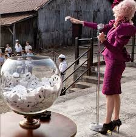
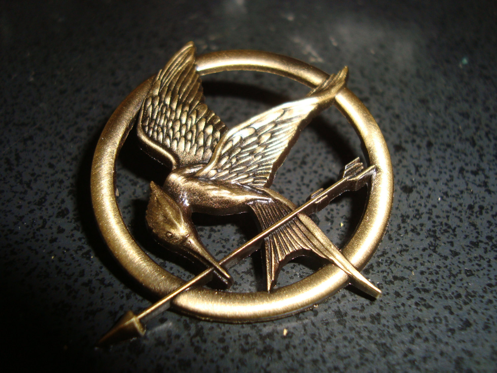
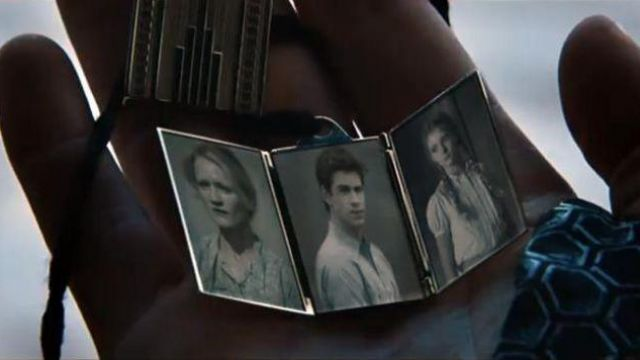
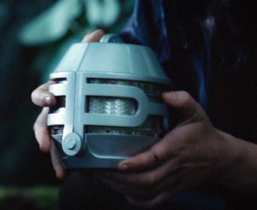
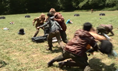
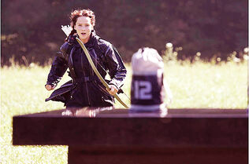

HTML Validated
HTML ValidatedThe Hunger Games were a morbid and brutal competition that took place annually in the country of Panem. Every year, one boy and one girl between the ages of 12 and 18 were selected from each of the twelve districts as tributes. The tributes train for a week and then are sent into an outdoor arena to fight to the death until one tribute remains. The event was nationally televised as mandatory viewing for all citizens. The last living tribute is declared the victor and is showered in gifts and lives the rest of their lives in luxury in Victor's Village. The winning district also receives parcels of food from the Capitol for a year. Seventy-five years before the 74th Hunger Games, the thirteen districts of Panem revolted against the Capitol. Together, they stood strong, but when District 13 was supposedly obliterated by the Capitol, resistance became impossible, as District 13 was the driving force behind the rebellion. The remaining districts submitted to the Capitol and lost their hope for change. Every year since the rebellion, the Capitol forced 24 children into the arena and used hidden cameras to televise the events in order to both entertain the Capitol citizens and remind the twelve districts how they are completely at the Capitol's mercy. Only one tribute can win the games, with the exception of the 74th Hunger Games, where Katniss Everdeen and Peeta Mellark of District 12 both won because of their joint attempted suicide.
Every year, each district holds a reaping ceremony and it is held lottery style. Two large glass balls contain slips of paper with the names of each child through the ages of 12-18. However, they can choose to add their name more times in exchange for tessera, which is a small ration of oil and grain. Each tessera has enough oil and grain to supply one family member with food for one year and entries are cumulative from year to year. An exception was during the 25th Hunger Games or the first quarter quell, where the districts were required to select their own tributes. The district's representative/escort picks a name out of the balls, one of the glass balls are for girls and the other one are for boys. The tributes whose names are chosen are then entered into the Hunger Games unless someone is willing to volunteer - a normally quite rare occasion unless it is in one of the "Career Districts", in which children have been training their whole lives at a special school to enter the Games. The one exception to the traditional one boy , one girl per district, a total of twenty-four reaped tributes rule was the 50th Hunger Games, the Second Quarter Quell. In these games, each District were required to double the amount of tributes and reap two girls and two boys for a total of 48 tributes to complete. Victors from previous Hunger Games are no longer eligible to be reaped or volunteer for subsequent games, even if they are still age eligible. The exception being the 75th Hunger Games, the Third Quarter Quell, where the reaping pool of potential tributes was restricted only to each district's existing victors.
Each living victor from each District is given the task of mentoring the next tributes for the Games. If there is only one living victor, he/she will be the mentor for both tributes (e.g. Haymitch mentors both Katniss and Peeta for the 74th and 75th Hunger Games). Any living victor, mentor or not, is required to visit the Capitol to watch the Games, visit the residents, and make Capitol TV cameos, but the mentors come alongside their respective District tributes and to watch the Games live. Mentors are very important as they give advice to their tributes, assist in the forming of alliances, politic for their tributes, secure sponsors, and control the sending of any gifts into the arena. A good clear-minded mentor is imperative to the success of their tributes with very few exceptions.
Each tribute is allowed one token from their district, to represent and remind them of home, however, they must not be able to be used as weapons. They are very carefully examined and checked for any hidden advantages. In the 74th Hunger Games, Glimmer, the female tribute from District 1, had her token, a ring, confiscated because it carried a hidden poisoned spike. Katniss' token was a golden pin given to her by Madge Undersee in the book and by her sister Primrose (Katniss actually bought the pin in the Seam from Greasy Sae and gave to Prim for good luck originally before the 74th Games reaping) in the movie, showing a Mockingjay in both the 74th and 75th Hunger Games. In the Launch Room, prior to the 74th Games, Cinna states that it could hardly get past the review board and it was almost confiscated because some people believed that it could be used as a weapon. It is mentioned that several years prior to the 74th Hunger Games, one girl's token was a small wooden ball that she dropped while on her starting plate, activating the mine underneath her feet killing her before the Games officially started. Rue's token was a necklace made out of grass with a star or flower. Finnick Odair's token for the 75th Hunger Games was a golden band from Haymitch, to signal Katniss to trust him in the arena. Peeta's token for the 75th Games was a golden trifold necklace with pictures of Prim, Katniss' mother, and Gale.
 As tributes battle in the arena, quite often they can become helpless (ex. Peeta Mellark with blood poisoning, Katniss' leg burn, etc.). This is simply because of the Cornucopia bloodbath, since the tributes are fighting over the items they need to win the Hunger Games. Many of the tributes are eft with limited or no items they wanted from the Cornucopia. Wealthy viewers or groups of people can pool their funds and send items into the arena should a tribute need something, such as food, shelter, weapons, or medicine. In the 74th Hunger Games, Katniss received burn medicine and food - most notably a loaf of bread from District 11 that she assumes was intended for Rue before her death. Katniss is extremely touched by this gesture as a tribute has never before received a gift from another district. Most items are very limited and small but during The 65th Hunger Games, Finnick Odair received what as recalled to Katniss one of the most expensive sponsorship gifts she had ever seen.
The bloodbath is what starts the excitement in the Games. On average, roughly half of the tributes die at the initial battle that takes place at the Cornucopia, near the starting point of the games. Spilling from the Cornucopia and strewn on the ground among the tributes are various items including weapons, food, water, and other supplies. Some tributes venture into the opening scramble for these valuable items, while others use it as part of their strategy for slaughter. Usually, the Career tributes are the ones who get most of these valuable supplies.
If the Gamemakers feel that there has not been enough bloodshed recently, they will invite all of the tributes to the Cornucopia for a feast. Normally this feast features something desirable to the tributes, like food, armour, medicine, etc., though Katniss states in the cave that sometimes there is only a loaf of stale bread to fight over, so they will be more likely to go. Attendance for the feast is not mandatory. Some still choose not to because these feasts usually result in a bloodbath.
Every twenty-five years, the president of Panem selects a card from a box made during the original establishment of the Hunger Games that makes a change in the rules of the reapings. For the first Quarter Quell, or the 25th Hunger Games, each district had to select the tributes who went into the arena. For the second Quarter Quell, or the 50th Hunger Games, twice as many tributes had to be reaped to go into the arena (It can be assumed that four children were reaped from each district that year; Two boys and two girls). That was the year Haymitch Abernathy won. For the third Quarter Quell, or the 75th Hunger Games, the tributes were reaped from the pool of existing victors. Katniss Everdeen has despaired when she heard this because her status as the only living female victor from District 12 assured her that she’d return to the arena.